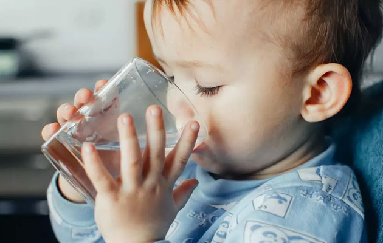
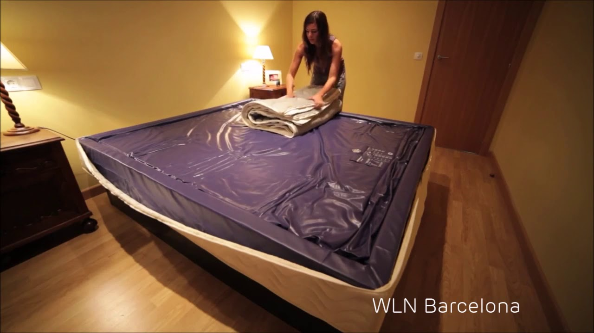

ÁGUA SUJA - ENCONTRO DE BLUESEIROS DE SALVADOR

Ning
Crie uma Rede do Ning!
AcessarÁGUA SUJA
ENCONTRO DE BLUESEIROS DE SALVADOR
Principal Minha página Membros Fotos Vídeos Fórum Jerry Marlon * Baixista Angela Cristina *Manager Blogs EventosEsta página foi criada com o objetivo de progagar o BLUES em Salvador. Se vc é adepto ao estilo, seja bem vindo!
CARTAZES !!!!
********************************************************************************************************************
********************************************************************************************************************
FOTOS: ENCONTRO DE BLUESEIROS DE SALVADOR 3º EDIÇÃO (18.11-QUARTA) PÇA PEDRO ARCANJO
/p>
ENCONTRO DE BLUESEIROS DE SALVADOR - 4º EDIÇÃO (19.10 .10 - PELOURINHO)
BANDA ÁGUA SUJA - ENCONTRO DE BLUESIEROS DE SALVADOR
Fórum
FOTOS DA PARESENTAÇÃO DA CANTORA CANADENSE - DOWN TYLER WATSON
Continuar
Iniciado por Angela Cristina 12 Ago, 2013.
SITE ROCK DO MATO ENTREVISTA JERRY MARLON E HOMENAGEIA O ÁGUA SUJA - CONFIRAM!!!!!
BLUES EM SALVADOR COM A BANDA ÁGUA SUJApor Dayanne Pereira 20, junho 2011… Continuar
Iniciado por Angela Cristina 20 Jun, 2011.
NOTÍCIAS -CLIPPIN (02/03/2011)
BLUES FREE SALVADOR - 02/03/2011 Continuar
Iniciado por Angela Cristina 10 Mar, 2011.
ROSI MARBACK - HISTÓRICO
Rosi Marback traz na bagagem experiências musicais diferenciadas, mas igualmente ricas que… Continuar
Iniciado por Angela Cristina 7 Mar, 2011.
NOTÍCAS-CLIPPING
BLUES FREE SALVADOR BLUES FREE SALVADOR… Continuar
Iniciado por Angela Cristina 5 Mar, 2011.
NOTÍCIAS /CLIPPING
BLUES FREE SALVADOR - BOTECO ALI DO LADO SATURDAY FAROL BLUES… Continuar
Iniciado por Angela Cristina 5 Mar, 2011.
Adicionar uma Discussão Exibir todosVídeos
Novo vocalista do Camisa de Vênus em Eu não matei Joana D Arc
Adicionado por Angela Cristina
Banda Agua Suja com Rosi Marback
Adicionado por Angela Cristina
Banda Agua Suja com o Harmonica Trio
Adicionado por Angela Cristina
Adicionar vídeo Exibir todosMensagens de blog
ÁGUA SUJA EM NOVA TEMPORADA - TAVERNA MUSIC BAR - 13/11/2015
Postado por Angela Cristina em 16 novembro 2015 às 22:27
BLUES FREE SALVADOR | ÁGUA SUJA, CONVIDADOS & JAM SESSION
Postado por Angela Cristina em 2 agosto 2013 às 20:19
BLUES FREE SALVADOR ´EDIÇÃO ESPECIAL
Postado por Angela Cristina em 10 maio 2012 às 16:30
Continuar
Postado por Angela Cristina em 21 dezembro 2011 às 17:37
Adicione uma mensagem no blog Exibir todosFotos
Adicionar fotos Exibir todosSobre
Angela Cristina criou esta Rede do Ning . Crie uma Rede do Ning! » Bem-vindo a
ÁGUA SUJA
Acessar
Membros
Exibir todosNOVA MIRON
BLUES FREE SALVADOR - TEMPORADA TAVERNA MUSIC BAR
BLUES FREE SALVADOR - TEMPORADA ÁGUA SUJA, CONVIDADOS & JAM SESSION
O TAVERNA MUSIC BAR orgulhosamente apresenta: ÁGUA SUJA & E O PROJETO BLUES FREE SALVADOR!!!
O mais extenso projeto de blues da Bahia está de casa e dia novos, a JAM agora será todas as quintas-feiras no descolado e mais novo badalado “point” da boa música na cidade, o TAVERNA MUSIC BAR.
BANDA ÁGUA SUJA - O grupo é formado pelo baixo e direção musical de JERRY MARLON, pela voz e guitarras alucinantes de OYAMA BITENCOURT, pelos teclados do maestro ZITO MOURA, pela engenharia de som e bateria do norte-americano BRIAN KNAVE e a produção de ANGELA CRISTINA. O projeto já é conhecido pelos apreciadores do Blues/R&B/Soul Music em Salvador, pois, já se aproxima dos 10 anos, de temporada em temporada, passando pelo ALI DO LADO (02 anos e 03 meses), MADALENA (01 ano e 06 meses), MOSTEIRO DE FRANCISCO (01 ano e 08 meses), BAR DO FAROL (02 anos) e recém-saída de uma extensa temporada de quatro anos e três meses, de um pub da cidade, onde se apresentavam semanalmente as quartas-feiras, feito nunca antes conseguido por nenhuma outra banda de blues em Salvador. Sempre com uma JAM SESSION por onde passaram músicos como: Mauro Thain, Guimo Migoya, João Teoria, Dada da Gafieira, Kiko Souza, Alfredo Moura, Victor Brasil, Jorge Brasil, Luizinho Assis, Nino Moura, Luciano Souza, Pedrinho Rêgo, Paulinho Andrade, Maestro Zeca Freitas, Fernando Nunes, Flávio Guimarães, Mauro Santolli, Keko Pires, Octávio Américo, Luciano Calazans, Fernando Barreto, Humberto Batalha, Toni Duarte, Candido Martinez, Cris Macchi, Tavis Magalhães, Gilmar Chavez, Miguel Archanjo, Robinson Cunha, Jelber Oliveira, Juliano Oliveira, Guiga Blues Rock, Eric e Álvaro Assmar, Mário Dannemann, Luiz Rocha, Martin Holland, Diego Andrade, Icaro Britto, Candice Fiais, Rosi Marback, Petronius Bandeira, Gustavo Mullen, Cadinho Almeida, Ivan Oliveira, Gabriel Gonçalvez, RB, Jorginho King Cobra, Armandinho Macêdo...entre outros. A turma está cheia de gás para esse novo momento, preparando um disco e um clipe para 2016, mexendo no repertório e aquecendo as turbinas... Além da formação com músico respeitados na cena musical o conjunto aglomera diversas apresentações em vários projetos musicais de alta relevância, inclusive, o ENCONTRO DE BLUEIROS DE SALVADOR que neste ano entrou na sua 5º edição sempre capitaneado e fomentado pelo conjunto... entre outros.
O TAVERNA MUSIC BAR, por sua vez é uma casa jovem, comandada pelo “antenado” BETO CHAVES, com um excelente atendimento, petiscos saborosos, cerveja geladíssima e de várias marcas. O acesso ao espaço é privilegiado durante este período de reformas no bairro do RIO VERMELHO, pois, fica próximo a curva da Praia da Paciência, onde encontra-se uma maior praticidade e facilidade de estacionar próximo ao espaço... O melhor de tudo A ENTRADA CONTINUA FREE mantendo a proposta do grupo que é levar a BOA MÚSICA e o BLUES/R&B para todos os públicos.
BLUES FREE SALVADOR – TEMPORADA TAVERNA MUSIC BAR
ÁGUA SUJA, CONVIDADOS E JAMS SESSION.
Onde:
Taverna Music Bar
Rua da Paciência, 127 – Rio Vermelho.
Quando:
Todas as quintas
Que horas:
A partir das 22h
ENTRADA FRANCA
Informações:
71 98296-2886 / 71 99957-4653
A The Dubliners Irish Pub se instalou no bairro mais boêmio da capital baiana, o Rio Vermelho
Da Redação (redacao@portalibahia.com.br)
A franquia The Dubliners Irish Pub, que já teve filiais no Centro Histórico de Salvador e na orla da Barra, agora promete levar o melhor da música para o Rio Vermelho. A casa, inspirada nos moldes dos aconchegantes pubs europeus, oferece estrutura para shows, com espaço para snooker e um cardápio variado com cervejas nacionais e importadas.
A inauguração acontece na próxima quarta-feira (10), e contará com o relançamento do projeto Blues Free Salvador e uma Jam Session de músicos profissionais do cenário local.
Chopperia no The Dubliners Irish Pub - Rio vermelho
A The Dubliners Irish Pub é uma franquia existente em mais de cinqüenta países e está presente na capital baiana desde abril de 2005. Inspirado na arquitetura intimista dos Pubs Ingleses e Irlandeses, o ambiente é climatizado, decorado com temas de bebidas famosas – como Jack Daniel’s e Budweiser – iluminado à meia luz.
"É uma oportunidade ímpar de voltar ao passado e vivenciar o clima boêmio em que nasceram alguns dos principais nomes do rock mundial e com uma invejável carta de cervejas", diz a assessoria da casa.
Além de sediar as apresentações de bandas renomadas e iniciantes no cenário musical do estado o local também receberá trabalhos teatrais.
The Dubliners Irish Pub
Local: Praia da Paciência, 255 – Rio Vermelho (Próximo a Farmácia S’antana)
Informações: 71 9957-4653 / 9925-6263
***Angela Cristina
71 9957-4653
angelapereira_2003@hotmail.com
***Jerry Marlon
71 9957-4663
jerrimarlon@hotmail.com
ÁGUA SUJA (RHYTHM BLUES) / ENCONTRO DE BLUESEIROS DE SALVADOR
Em 2004, Jerry Marlon e Hélio Rocha amigos que tocavam juntos na banda 14º andar , tiveram a idéia de montar uma banda de blues, juntaram-se a eles Marcelo Torres e Luís Rocha, no ano seguinte Hélio Rocha saiu e em seu lugar entrou Cláudio Lacerda o que marcou um retorno ao Talk Blues. Por causa da grande demanda de outros projetos Marcelo também saiu, e em seu lugar entrou o atual baterista o americano Brian Knave.
O nome da banda “Água Suja” foi dado por Hélio Rocha que teve origem através do nome do Bluesman Muddy Water, que traduzido ao pé da letra significa “água barrenta”, que remete às águas do Rio Mississip e foi adaptada para que tivesse um melhor sentido e chegou-se à “água suja”.
A Água Suja é marcada por uma grande rotatividade de músicos, o que Jerry Marlon, seu fundador, diz ser “uma banda libertina”. Porém, a grande vontade de todos, os que passaram e os que ficaram, era ter uma banda de blues para renovar a cena do blues de Salvador. Levam o R&B como vertente para fazer shows mais inovadores.
A banda que começou tocando no Irsh Pub, no primeiro show tocaram para um público de no máximo 10 pessoas, contando com as esposas dos músicos, poucos amigos e as garçonetes do pub, participou de festivais e circuitos de blues em Salvador, como o Moto Festival 2007 e 2008, o Circuito Alternativo no carnaval de 2007, Teatro Acbeu, Anuário de Engenharia 2007 (Hotel da Bahia) temporada de 03 meses no The Dubliners Irsh Pub, (Barra), 08 meses no Madalena bar e restaurante (orla), 06 meses no Mosteiro de Francisco (Barra) há mais de 04 meses no Portela Café no Rio Vermelho, recepcionou o 1º e 2º Encontro de Blueseiros de Salvador evento conceitual do seguimento blues em Salvador, também o Projeto Saturday Farol Blues, evento que reúne diversos artistas da cidade em um mesmo palco durante 02 meses. Atualmente está dando andamento ao projeto Blues For Salvador, todas as quartas no bar Ali do Lado, Rua da Paciência, Rio Vermelho.
A banda formada por Jerry Marlon no baixo, o guitarrista e vocal Oyama Bittencourt, o tecladista Jelber Oliveira e o Brian Knave (E.U.A) na bateria. O repertório vai do blues tradicional, passando belo R&B, soul music, country e rock’n’roll.
ÁGUA SUJA é uma banda de R&B , onde o BLUES , O SOUL, O JAZZ , O COUNTRY e o ROCK ´N ROLL aparecem com naturalidade. Com dois PROJETOS significativos nos últimos 10 anos, o ENCONTRO DE BLUSEIROS DE SALVADOR e o BLUES FRE SALVADOR, este com uma JAM SESSION concorridíssima ,o grupo se mantém em cartaz com uma frequência de público recorde. O objetivo esta justamente nessa FUSÃO, no encontro de músicos, na natureza da MÚSICA sem fronteiras geográficas e estilos, uma vez que toda a música do SEC XX veio, de uma forma ou de outra da AFRICA : O BLUES, O SAMBA , A SALSA, O JAZZ ...etc., GENUÍNOS representantes na BAHIA da WORLD MUSIC, como é chamada esta manifestação musical que alcança quaisquer lugar do planeta.
Na sua quarta edição, o Encontro de Bluseiros surgiu através da iniciativa do baixista da banda Água Suja , Jerry Marlon, em parceria com a produtora Ângela Pereira. O projeto é fomentado pelo Governo do Estado da Bahia através da Secretaria de Cultural pelo projeto Pelourinho Cultural. “Louvável a iniciativa de uma parceria para poder levar o blues ao grande o público”, afirma, Jerry. Entre os apoiadores estão a Nova Miron e Cheiro de Pizza.
Com sua primeira edição em 2007, o projeto visa reunir profissionais de qualidade e simpatizantes do seguimento blues, em Salvador. Além de ressaltar à impressa e ao público local a importância da diversificação musical dentro do Estado, dando maior visibilidade cultural ao público baiano. Ao longo do evento, mais de cinco mil pessoas foram reunidas.
O público poderá apreciar o show nas mesas ao redor do palco, contando com um atendimento na mesa, que oferece um cardápio com bebidas e tira-gostos. Para os mais empolgados, outra opção é ficar dançando na pista próxima ao palco. O ambiente é popular e agradável, permitindo uma mescla de público, contando com os fanáticos por blues, músicos, turistas e locais. “Já fui em duas edições do projeto e não perderei essa quarta! Uma cidade onde o axé impera é maravilhoso ter essa opção”, comenta David Roth, Analista de Sistema e fã de blues.
Formada por Jerry Marlon no baixo, Oyama Bittencourt na guitarra e vocal, Jelber Oliveira no teclado e o Brian Knave na bateria, a Banda Água Suja lidera o encontro com um repertório que vai do blues tradicional, passando belo R&B, soul music, country e rock’n’roll. Ao longo do show a Água Suja levou ao palco renomados convidados do cenário blues, nacional e internacional como, Lon Bové (E.U.A), Diego Orrico (BA), Ícaro Britto (BA) e Eric Assmar (BA). Baixos, guitarras e gaitas dialogam finamente no ambiente. Em edições anteriores, nomes como Mário Dannemann, Rosi Marback, Pablicio (Clube de Patifes) e Robson Cunha, já participaram do projeto.
http://youtu.be/nJ7moCVk7jA
Aniversários
Aniversários de Hoje
Claudio Caetano Dar um presente
Valeria Monteiro Dar um presente
Aniversários de Amanhã
Unemployment Rate During The Gre Dar um presente
Últimas atividades
Angela Cristina postou fotos 22 mais... 16 Nov, 2015 Posts no blog por Angela CristinaÁGUA SUJA EM NOVA TEMPORADA - TAVERNA MUSIC BAR - 13/11/2015
Ver mais... 16 Nov, 2015 0 Comentários Andreza Aparecida da Silva e Enrique franco entraram em ÁGUA SUJA 29 Abr, 2015 jane anderson , alba Celeste lopes vasconelos , Magdalene Editha e mais 53 pessoas entraram em ÁGUA SUJA 5 Jul, 2014 Angela Cristina postou uma discussãoFOTOS DA PARESENTAÇÃO DA CANTORA CANADENSE - DOWN TYLER WATSON
https://sites.google.com/site/papodegaita/dawn-tyler-watson-e-luiz-rocha Ver mais... 12 Ago, 2013 0 Comentários Posts no blog por Angela CristinaBLUES FREE SALVADOR | ÁGUA SUJA, CONVIDADOS & JAM SESSION
Ver mais... 2 Ago, 2013 0 Comentários Marisa Áurea de Sá Falcão é agora um membro de ÁGUA SUJA 18 Jul, 2012 Dê as boas-vindas a eles! Posts no blog por Angela CristinaBLUES FREE SALVADOR ´EDIÇÃO ESPECIAL
Ver mais... 10 Maio, 2012 0 Comentários Maurício Galvão é agora um membro de ÁGUA SUJA 8 Mar, 2012 Dê as boas-vindas a eles! Posts no blog por Angela CristinaSem título
Ver mais... 21 Dez, 2011 0 Comentários Américo Fascio Lopes Filho , grimaldi ribeiro assumpçao e Valeria Monteiro entraram em ÁGUA SUJA 22 Nov, 2011 Posts no blog por Angela CristinaBLUES FREE SALVADOR | ÁGUA SUJA & JAM SESSION | ABERTURA: MARCONI LINS
Ver mais... 22 Nov, 2011 0 Comentários Laila Ribeiro Hamilton de Campos e Ana Katia Alves entraram em ÁGUA SUJA 19 Set, 2011 Reinaldo dos Ajos Silva é agora um membro de ÁGUA SUJA 30 Ago, 2011 Dê as boas-vindas a eles! Posts no blog por Angela CristinaDAWN TYLER WATSON ( A CANTORA CANADENSE EM ÚNICA APRESENTAÇÃO NA CIDADE)
Ver mais... 30 Ago, 2011 0 Comentários Marcia Marise Magalhaes santos deixou um comentário para Marcia Marise Magalhaes santos "Estou aprendendo rsrsr" 17 Ago, 2011 Marcia Marise Magalhaes santos e Francisco Justiniano entraram em ÁGUA SUJA 17 Ago, 2011 Posts no blog por Angela CristinaNOITE DAS DIVAS | ROSI MARBACK & CAROL RODRIGUES - ELAS CANTAM BLUES
Ver mais... 17 Ago, 2011 0 Comentários RestGate Blues atualizaram suas fotos do perfil 15 Ago, 2011 RestGate Blues atualizaram seus perfis 15 Ago, 2011 Mais... RSS© 2020 Criado por Angela Cristina . Ativado por
Relatar um incidente | Termos de serviço
